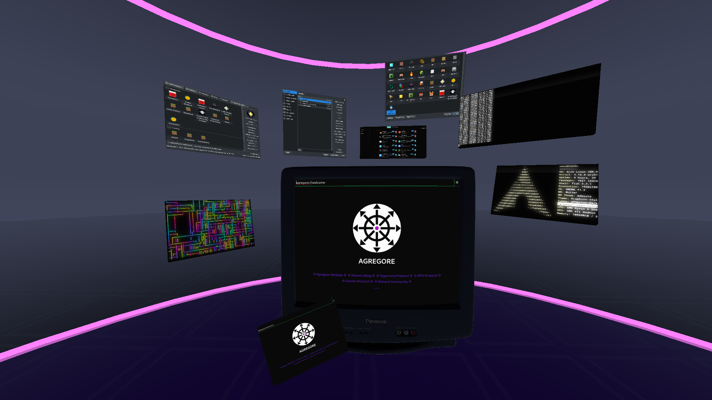
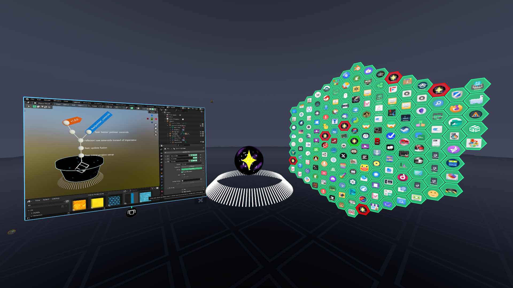
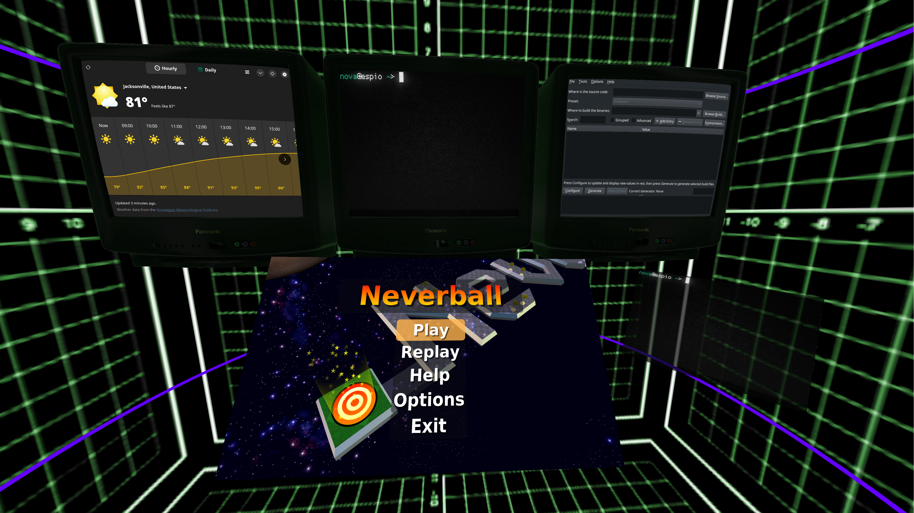

Panels for wayland apps and a CRT panel shell for XR UI.

A workflow containing Blender, a turntable with a 3D model preview, and the hexasgon app launcher.

Multiple objects working independently all at once.
Panels for wayland apps and a CRT panel shell for XR UI.
A workflow containing Blender, a turntable with a 3D model preview, and the hexasgon app launcher.
1 of 3